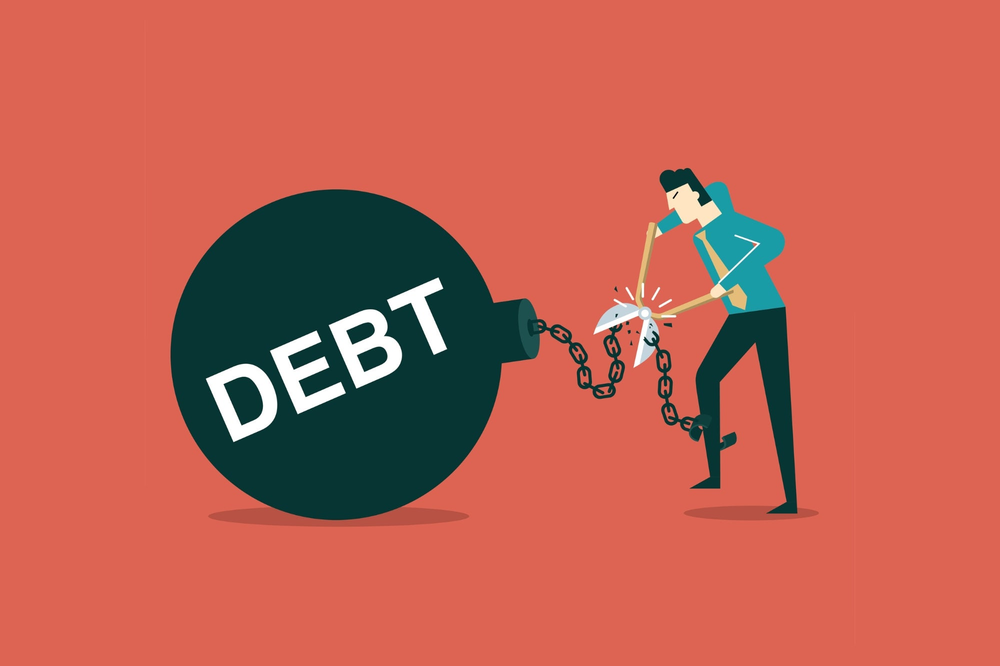

Date: September 01, 2023 07:48 AM IST
Indian states need to do more to reduce their debt levels and bring them closer to the Fiscal Responsibility and Budget Management goal of 20%, a recent study by economists at Bank of Baroda stated. The study suggested debt to GDP ratio at 25% as a short-term goal and the interest to revenue receipts ratio targeted at around 15%. “This can be a good beginning with roadmaps drawn up for various states,” the research stated.Four states will allocate more than 15% of their revenue towards interest payments in FY24, with Punjab contributing nearly a quarter of its revenue to interest payments, the research found. The study, analysing budget data for FY24 for 27 states, pointed that only three states in the country were closer to their FRBM target of 20% debt to Gross State Domestic Product ratio, whereas 15 were over 30%. “The problem is that when debt levels are high interest payments increase, which strains the revenue budget,” said Madan Sabnavis, chief economist, Bank of Baroda. While the study placed Odisha as the best state having controlled its debt, fiscal deficit and interest payment levels. It placed Punjab as the worst, with high levels of debt, fiscal deficit, interest payment ratios and outstanding guarantees. “Himachal Pradesh is however more vulnerable as the debt servicing ratio is high. Andhra and Telangana have the highest guarantee levels which stands out more for the former where the debt levels are also high,” the study stated. Another area of concern that the study pointed to was the issue of contingent liabilities, which it noted was on account of subsidies for consumers. It said that Andhra and Telangana were the most aggressive on this count, but UP, Tamil Nadu, Rajasthan and Kerala. UDAY scheme was launched to address this problem. “To begin with the guarantee system needs to be relooked at again as such assurances do keep entities less responsible for their business,” BoB economists stated. The study assumes importance at a time when elections to five states are due later this year, and the general elections will be held next year, where the Narendra Modi government will be looking to secure a third time.